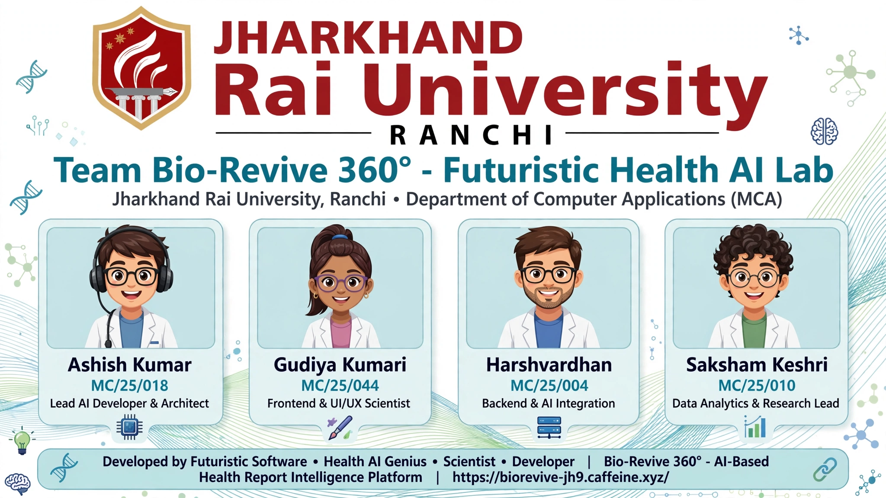

Bio-Revive 360° is an AI-Based Health Report Intelligence Platform that detects biological age of every major organ and corrects lifestyle-induced degeneration.
Modern lifestyle is accelerating organ aging years ahead of chronological age. Existing health reports are fragmented, difficult to understand.
AI-Based Health Report Analysis, Organ Biological Age Estimation and Health Risk Prediction Platform
HRV, Arterial stiffness, BP variability. Remedy: HIIT
EEG ratio, Memory, Sleep efficiency. Remedy: Digital sunset
HbA1c, Insulin resistance. Remedy: Intermittent fasting
Bone density, Grip strength. Remedy: Resistance training
Cortisol, Thyroid. Remedy: Circadian alignment
Live AI platform built by Futuristic Software Lab from JRU Ranchi.
MCA Team - Jharkhand Rai University, Ranchi
